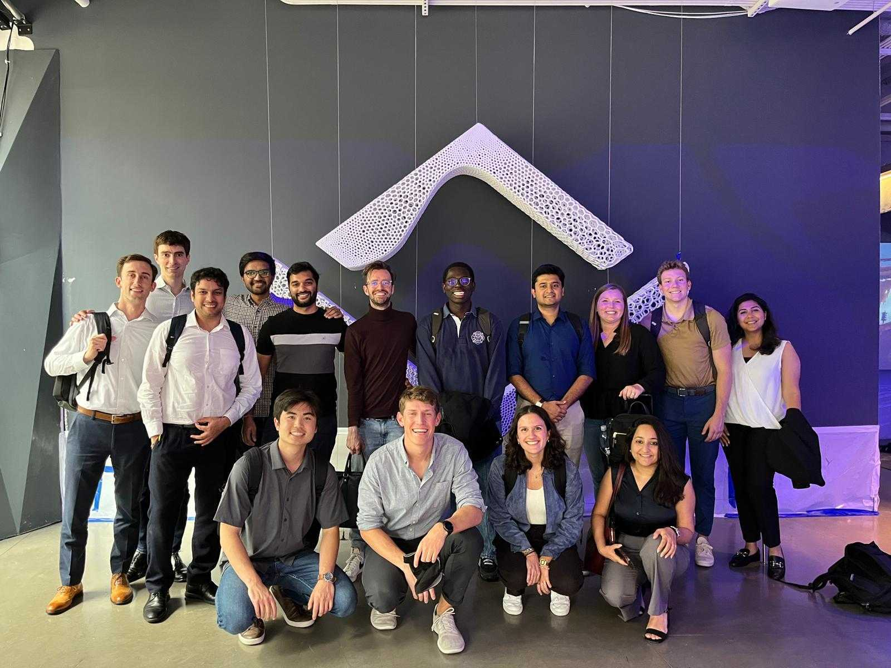
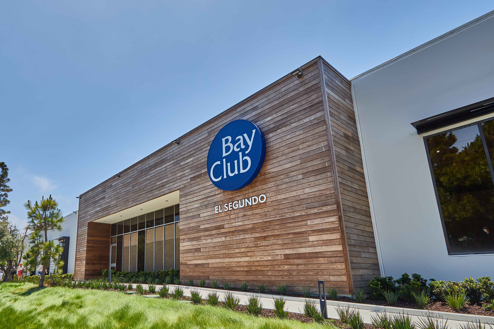
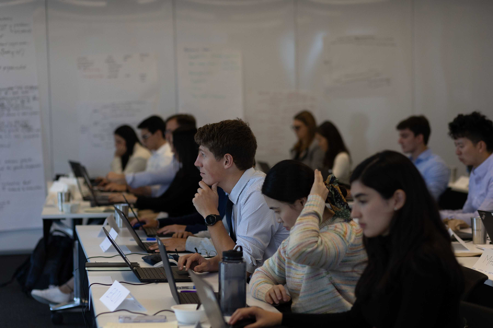
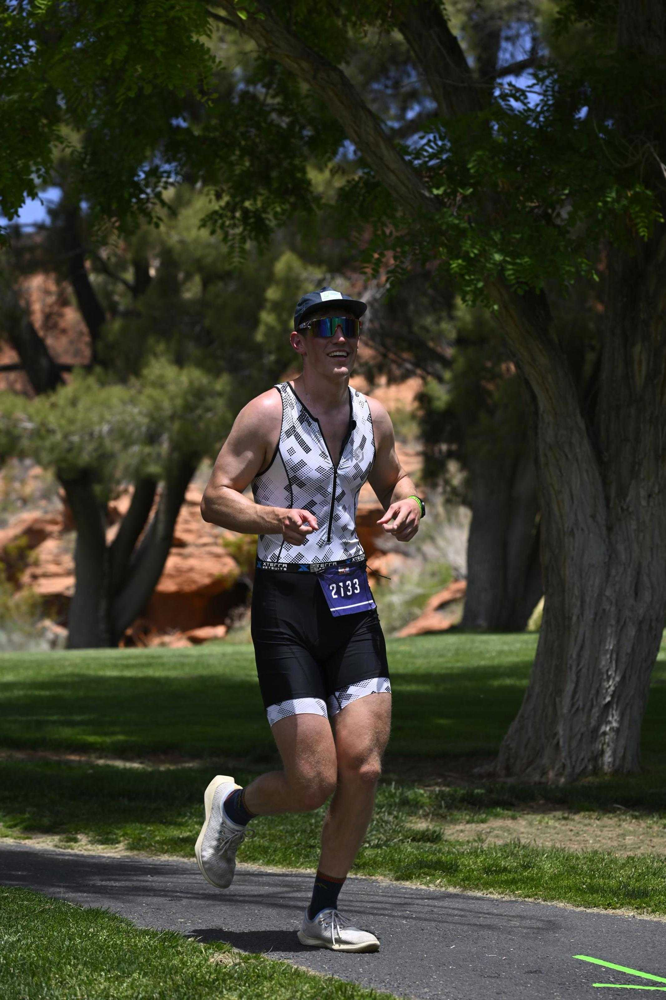
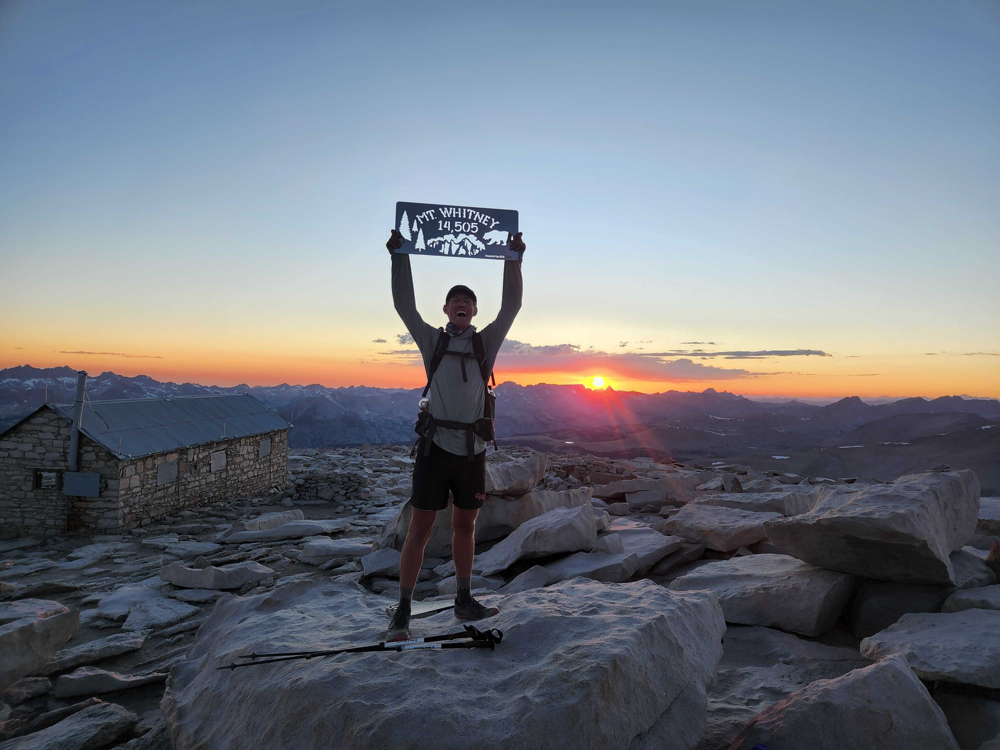

Creating growth through excellence in operations, and strategy.
I thrive on transforming complex organizations into productive operations. With a background in supply chain management, and operations excellence, I create actionable solutions that drive tangible results.
Chronological Record Click items to expand
Associate at Kearney
Created over $250M in run rate savings through new supply chains, operational improvements, and labor efficiencies for clients across manufacturing and hospitality sectors.

Project Manager at Bay Club
Drove data-driven decisions and shared membership product launch through collaborations between makreting and technolgy for our 80,000 members across 26 campuses.

Analyst Roles
Previous experience includes analyst positions at Angeles Investments and Artemis Connection, focusing on quantitative research and strategic support.

Hobbies & Interests
Outside of the office, you'll usually find me outside. Whether it's running in the Marina, swimming laps at Gateway or Aquatic Park, or cycling across the bridge, I find my best ideas come when I'm moving.
When I'm not on the road or in the pool, I'm probably skiing or backpacking somewhere in the Sierra Nevada. I've hiked the Pacific Crest Trail from Mexico to Canada, became an Eagle Scount and continue to volunteer at my church and at the polls

